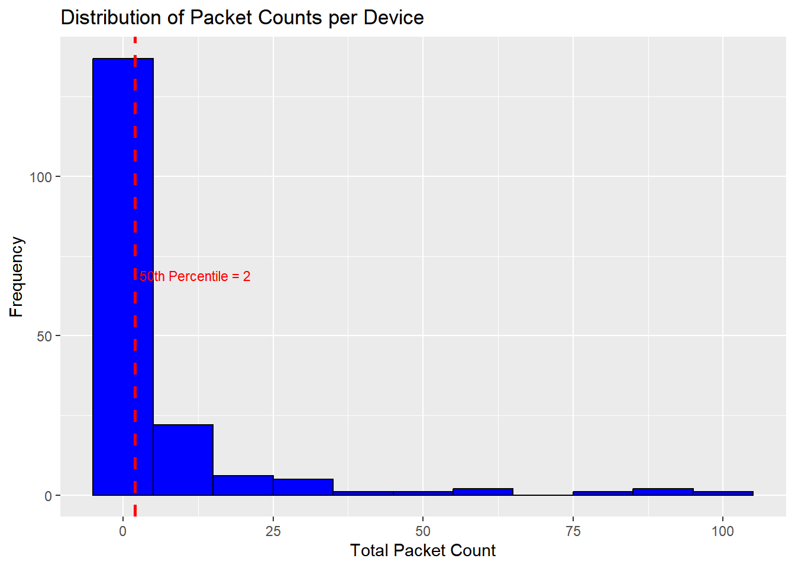

In this section, we will clean the aggregated WiFi data to ensure it is suitable for analysis. We will start by loading the aggregated data from CSV files, combine them, and then apply various filtering techniques to remove random MAC addresses, non-mobile devices, and rarely detected devices.
8.1 Loading and Combining Aggregated Data
We will load the aggregated data from the previously created CSV files and combine them into a single dataset.
pacman::p_load(data.table, lubridate)# List all CSV files in the ch3 folder that contain "1second" in their filenamescsv_files <-list.files("material/ch3", pattern ="1second.*\\.csv$", full.names =TRUE)# Load aggregated data from the CSV files and combine themwf_combined <-rbindlist(lapply(csv_files, fread))# Print the first few rows to verifyhead(wf_combined, 5)
Random MAC addresses can lead to duplicate counting and inconsistent data. We will identify and remove entries with random MAC addresses where source_address_randomized is 1.
# Remove entries with random MAC addresseswf_filtered_1 <- wf_combined[source_address_randomized !=1]
8.2.2 Removal of Non-Mobile Devices
We will filter out non-mobile devices from our dataset. Non-mobile devices typically exhibit characteristics such as being detected by fewer sensors and being present in the same location for extended periods. We will use two main criteria to identify and remove these non-mobile devices:
Detected by fewer sensors: Devices detected by a small number of sensors are likely to be non-mobile.
Detected for long durations: Devices detected for long periods in the same location are also likely to be non-mobile.
Step 1: Define Filtering Thresholds
Define the thresholds for filtering. You can adjust these values based on your dataset and analysis needs.
# Define thresholds for filtering non-mobile devicessensor_threshold_percentile <-0.3# Devices detected by fewer sensors: the 30th percentileduration_threshold_hours <-12# Devices detected for long durations: at least 12 hours in a day
Step 2: Calculate the Number of Unique Sensors
Calculate the number of unique sensors that detected each device.
# Calculate the number of unique sensors detecting each devicedevice_sensor_counts <- wf_filtered_1[, .(sensor_count =uniqueN(sensor_name)), by = source_address]
Step 3: Identify Devices Detected by Fewer Sensors
Identify devices that are detected by a small number of sensors, below the defined threshold.
# Identify devices detected by fewer sensors (below the specified percentile)low_detection_threshold <-quantile(device_sensor_counts$sensor_count, sensor_threshold_percentile)low_detection_devices <- device_sensor_counts[sensor_count <= low_detection_threshold, source_address]# Filter dataset to keep only devices detected by fewer sensorswf_filtered_2 <- wf_filtered_1[source_address %in% low_detection_devices]
Step 4: Identify Devices Detected for Long Durations
Identify devices that are detected for at least the specified number of hours in a day.
# Further filter to identify devices detected for at least the specified duration in a daylong_duration_devices <- wf_filtered_2[, .(date =as.Date(timestamp), hour =hour(ymd_hms(timestamp))), by = source_address][, .N, by = .(source_address, date, hour)][, .N, by = .(source_address, date)][N >= duration_threshold_hours, source_address]
Step 5: Remove Non-Mobile Devices
Combine the criteria to identify non-mobile devices and remove them from the dataset.
# Identify and remove non-mobile devices that are detected continuouslynon_mobile_devices <-intersect(low_detection_devices, long_duration_devices)# Remove non-mobile devices from the datasetwf_filtered_3 <- wf_filtered_1[!source_address %in% non_mobile_devices]
8.2.3 Removal of Rarely Detected Devices
We will filter out rarely detected devices from our dataset. Rarely detected devices typically have very few packet counts, which can introduce noise and reduce the reliability of our analysis. We will use the following steps to identify and remove these devices:
Calculate total packet counts per device: Sum the number of packets detected for each device.
Define a threshold: Set a threshold based on a chosen percentile of the packet counts. Ensure a minimum threshold of 5.
Remove rarely detected devices: Filter out devices with packet counts below the threshold.
Step 1: Define Threshold
Define the threshold for filtering. You can adjust these values based on your dataset and analysis needs.
# Define the percentile threshold for packet countspacket_threshold_percentile <-0.50# 50th percentile for packet counts (adjust based on visualization)# Define the minimum threshold for packet countsmin_packet_threshold <-5# Minimum threshold of 5 packets
Step 2: Calculate Total Packet Counts
Calculate the total number of packets detected for each device.
# Calculate the total number of packets detected for each devicedevice_packet_counts <- wf_filtered_3[, .(sum_packet = .N), by = source_address]
Step 3: Determine Final Threshold
Set a final threshold based on the chosen percentile of the packet counts. Ensure a minimum threshold of 5.
# Calculate the chosen percentile threshold for packet countsthresh_short <-quantile(device_packet_counts$sum_packet, packet_threshold_percentile, na.rm =TRUE)# Ensure the threshold is not less than the minimum packet thresholdif (is.na(thresh_short) || thresh_short < min_packet_threshold) { thresh_short <- min_packet_threshold}
Explanation for Choosing the 50th Percentile and a Minimum of 5
To better understand why the 50th percentile (median) and a minimum threshold of 5 were chosen, we visualize the distribution of packet counts per device.
# Load necessary package for visualizationlibrary(ggplot2)# Calculate the 50th percentile (median) of the packet countsmedian_packet_count <-quantile(device_packet_counts$sum_packet, 0.50)# Plot the distribution of packet counts with the 50th percentile markedggplot(device_packet_counts, aes(x = sum_packet)) +geom_histogram(binwidth =10, fill ="blue", color ="black") +# Histogram of packet countsgeom_vline(aes(xintercept = median_packet_count), color ="red", linetype ="dashed", size =1) +# Add a red dashed line for the 50th percentilelabs(title ="Distribution of Packet Counts per Device", x ="Total Packet Count", y ="Frequency") +annotate("text", x = median_packet_count +10, y =max(table(device_packet_counts$sum_packet)), label =paste("50th Percentile =", median_packet_count), color ="red", vjust =-1, size =3) # Annotate the 50th percentile
Warning: Using `size` aesthetic for lines was deprecated in ggplot2 3.4.0.
ℹ Please use `linewidth` instead.

The histogram shows the distribution of total packet counts per device. Each bar represents the frequency of devices with a certain range of packet counts. The red dashed line indicates the 50th percentile (median) of the packet counts, which is 2. This means that 50% of the devices have 2 or fewer packets. The annotation next to the red dashed line shows the exact value of the 50th percentile.
Choosing the 50th percentile as the threshold balances the dataset by removing the least active 50% of devices, which are likely to introduce noise. It provides a reliable central tendency measure, robust against outliers.
Setting a minimum threshold of 5 packets ensures that devices with very low activity are removed, even if they fall above the 50th percentile. This focuses the dataset on devices with sufficient data for meaningful analysis.
These thresholds enhance the quality and reliability of the WiFi data used for analysis. Adjust the packet_threshold_percentile variable as needed based on your dataset.
8.2.3.1 Step 4: Remove Rarely Detected Devices
Filter out devices with packet counts below the threshold.
# Identify rarely detected devices with packet counts below the thresholdrarely_detected_devices <- device_packet_counts[sum_packet <= thresh_short, source_address]# Remove rarely detected devices from the datasetwf_final <- wf_filtered_3[!source_address %in% rarely_detected_devices]
8.3 Verification of Filtering Steps
To ensure that the filtering steps have been correctly applied, we will summarize the number of unique devices and the total packet counts at each step.
# Create a summary table to verify filtering stepsfilter_table <-data.table(step =c("Initial", "After Removal of Random MACs", "After Removal of Non-Mobile Devices", "After Removal of Rarely Detected Devices (Final)"),unique_MAC =c(length(unique(wf_combined$source_address)), # Number of unique devices after each steplength(unique(wf_filtered_1$source_address)),length(unique(wf_filtered_3$source_address)),length(unique(wf_final$source_address))), # After final filteringsum_packet =c(nrow(wf_combined), # Total packet counts after each stepnrow(wf_filtered_1),nrow(wf_filtered_3),nrow(wf_final)) # After final filtering)# Print the summary table to verify filtering stepsprint(filter_table)
step unique_MAC sum_packet
1: Initial 243 2694
2: After Removal of Random MACs 178 1300
3: After Removal of Non-Mobile Devices 178 1300
4: After Removal of Rarely Detected Devices (Final) 41 1034
The verification table provides a summary of the filtering process, showing the impact of each filtering step:
Initial: The combined dataset contains 243 unique MAC addresses with a total of 2,694 packets.
After Removal of Random MACs: Removing random MAC addresses reduces the dataset to 178 unique MAC addresses and 1,300 packets.
After Removal of Non-Mobile Devices: Filtering out non-mobile devices does not reduce the dataset further, indicating that no devices met the non-mobile criteria within this dataset’s timeframe.
After Removal of Rarely Detected Devices (Final): The final step reduces the dataset to 41 unique MAC addresses and 1,034 packets, ensuring that only devices with sufficient data for meaningful analysis are included.
The reason for no reduction in the number of non-mobile devices in step 3 is likely due to the short duration of the example dataset. Non-mobile devices are typically identified over longer periods (e.g., 12 hours), and this dataset may not provide enough data to meet that criterion.
8.4 Efficient Data Cleaning with a Function
To streamline the data cleaning process, we will create a function that performs all the filtering steps in one go. This function will:
Load the aggregated data from the specified CSV files.
Remove entries with random MAC addresses.
Identify and remove non-mobile devices based on the defined thresholds.
Identify and remove rarely detected devices based on the chosen percentile and minimum threshold.
Return the cleaned dataset.
Creating the Data Cleaning Function
# Load necessary packagesif (!require(pacman)) install.packages("pacman")pacman::p_load(data.table, lubridate)# Define the data cleaning functionclean_wifi_data <-function(csv_files, sensor_threshold_percentile, duration_threshold_hours, packet_threshold_percentile, min_packet_threshold) {# Load and combine the aggregated data wf_combined <-rbindlist(lapply(csv_files, fread))# Step 1: Remove entries with random MAC addresses wf_filtered_1 <- wf_combined[source_address_randomized !=1]# Step 2: Identify and remove non-mobile devices device_sensor_counts <- wf_filtered_1[, .(sensor_count =uniqueN(sensor_name)), by = source_address] low_detection_threshold <-quantile(device_sensor_counts$sensor_count, sensor_threshold_percentile) low_detection_devices <- device_sensor_counts[sensor_count <= low_detection_threshold, source_address] wf_filtered_2 <- wf_filtered_1[source_address %in% low_detection_devices] long_duration_devices <- wf_filtered_2[, .(date =as.Date(timestamp), hour =hour(ymd_hms(timestamp))), by = source_address][, .N, by = .(source_address, date, hour)][, .N, by = .(source_address, date)][N >= duration_threshold_hours, source_address] non_mobile_devices <-intersect(low_detection_devices, long_duration_devices) wf_filtered_3 <- wf_filtered_1[!source_address %in% non_mobile_devices]# Step 3: Identify and remove rarely detected devices device_packet_counts <- wf_filtered_3[, .(sum_packet = .N), by = source_address] thresh_short <-quantile(device_packet_counts$sum_packet, packet_threshold_percentile, na.rm =TRUE)if (is.na(thresh_short) || thresh_short < min_packet_threshold) { thresh_short <- min_packet_threshold } rarely_detected_devices <- device_packet_counts[sum_packet <= thresh_short, source_address] wf_final <- wf_filtered_3[!source_address %in% rarely_detected_devices]return(wf_final)}# Define parameterssensor_threshold_percentile <-0.3# Devices detected by fewer sensors: the 30th percentileduration_threshold_hours <-12# Devices detected for long durations: at least 12 hours in a daypacket_threshold_percentile <-0.50# 50th percentile for packet counts (adjust based on visualization)min_packet_threshold <-5# Minimum threshold of 5 packets# Example usagecsv_files <-list.files("material/ch3", pattern ="1second.*\\.csv$", full.names =TRUE)cleaned_data <-clean_wifi_data(csv_files, sensor_threshold_percentile, duration_threshold_hours, packet_threshold_percentile, min_packet_threshold)# Print the first few rows of the cleaned data to verifyhead(cleaned_data)
This function automates the entire data cleaning process, making it easier and faster to clean large datasets. Adjust the parameters as needed based on your specific dataset and analysis requirements.